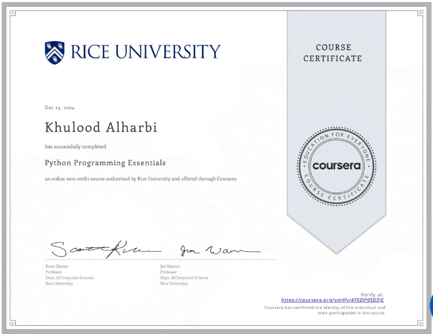
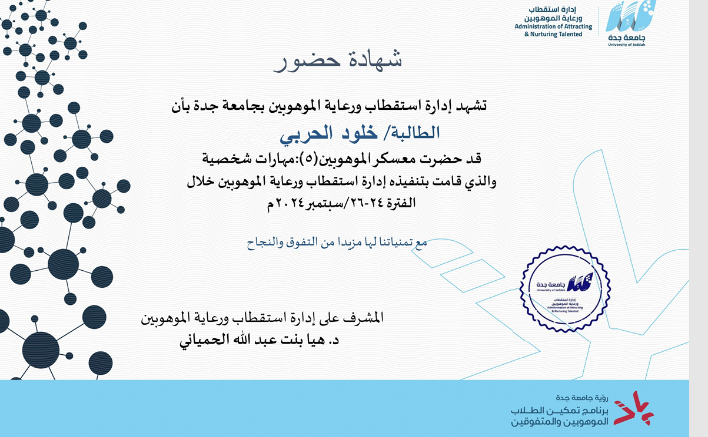
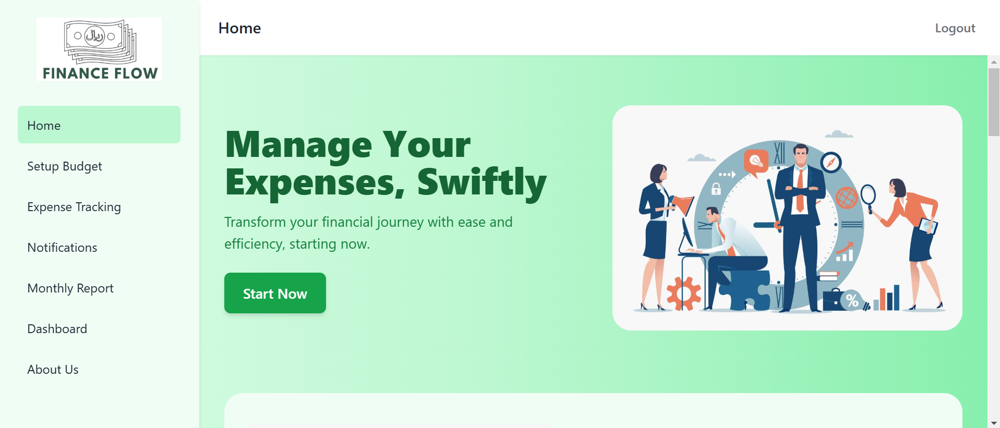

University of Jeddah
Bachelor's Degree, Computer Software Engineering
Sep 2022 - 2026
Activities: Gifted Students Department, Academic Acceleration Program
Software Engineering Student @ University of Jeddah
Jeddah, Makkah, Saudi Arabia
A highly motivated Software Engineering student at the University of Jeddah with a strong passion for technology, data analysis, and problem-solving. Skilled in data analysis, A/B testing, and statistical methods, with hands-on experience gained from the Udacity Nanodegree in Statistics for Data Analysis. Committed to continuous learning, teamwork, and delivering innovative solutions. Proficient in programming, data visualization, and software development, with a focus on creating impactful results through technology.
Bachelor's Degree, Computer Software Engineering
Sep 2022 - 2026
Activities: Gifted Students Department, Academic Acceleration Program
Google Developer Student Club | UJ
Sep 2024 - Present · 6 months

Rice University · Issued Dec 2024
Issued Sep 2024
Key Skills:

University of Jeddah · Issued Jan 2024
IELTS Official · Issued Sep 2022
جمعية إدارة البيانات (داما السعودية) | DAMA Saudi
جمعية إدارة البيانات (داما السعودية) | DAMA Saudi

A Personal Finance Management Application designed to help users manage their finances effectively. The application offers features such as expense tracking, budget allocation, and financial goal setting, all accessible through a user-friendly dashboard. The project utilized an agile methodology, with prioritized functional and non-functional requirements, and was divided into three sprints focusing on user registration, expense entry, budget management, and dashboard overview.
Key Components:
Tools Used:

Developed a full-stack e-commerce website to simulate an online shopping experience. The project involved front-end design, back-end development, and database management. It featured user authentication, product listing, shopping cart functionality, and a checkout process with payment integration. The application was designed with scalability and user experience in mind, employing modern web technologies to ensure a smooth and secure transaction process.
Key Components:
Tools Used: